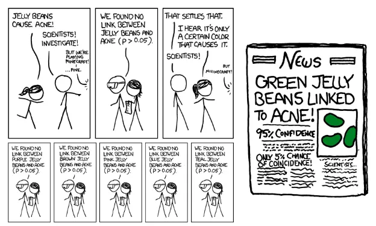
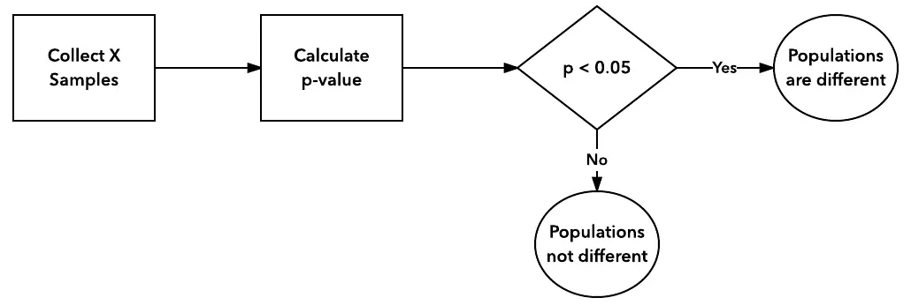

Rock’s blog
About
学习 & 工作 & 思考
Categories
All
(8)
AB
(7)
多臂老虎机
(1)
多重检验
(1)
实验设计
(3)
序贯检验
(1)
旧文迁移
(5)
贝叶斯
(2)
赌徒破产
(1)
随机游走
(1)
贝叶斯和多臂老虎机
贝叶斯
多臂老虎机
旧文迁移
多臂老虎机是一个在探索(exploration)和开发(exploitation)过程中寻找最高收益的问题。此类“实验”能力几乎已经成为了优秀实验平台的标配。
本篇是阅读《A modern Bayesian look at the multi-armed bandit》后结合个人理解的学习总结。它总结了基于贝叶斯的随机概率匹配法和其它相关方法。
Nov 26, 2023
双样本客观贝叶斯检验
AB
贝叶斯
旧文迁移
本文是对《Objective Bayesian Two Sample Hypothesis Testing for Online Controlled Experiments》的理解。
Nov 26, 2023

A/B实验设计 —— 多重检验
AB
实验设计
多重检验
旧文迁移
本文介绍A/B实验中一个常见的错误——多重检验错误，它经常影响实验得到错误的结论。相关数学推导放在文末，跳过不影响理解。
Nov 25, 2023

A/B实验设计 —— 偷看问题
AB
实验设计
旧文迁移
偷看是ab测试中最常遇到的问题，本文将说明影响，分析用户为什么偷看，探讨如何应对。
Nov 25, 2023
A/B实验设计 —— 样本量计算
AB
实验设计
旧文迁移
本文介绍样本量对实验效果的影响，以及如何正确选择样本量。仅作为实验设计者可跳过最后数学推导过程，直接使用工具运算。
Nov 13, 2023
赌徒破产和序贯检验
AB
序贯检验
赌徒破产
随机游走
本文是对Simple Sequential A/B Testing的解读。 该方法归属序贯检测类，可以用于伯努利分布场景，随着抽样持续进行，判断接受零假设或备择假设（关于序贯检测）。
Nov 12, 2023
实验间共享对照组缺陷及对策
AB
A/B实验目标是实现在线随机对照实验
，因此需要满足「随机对照实验」的要求和前提。
然而前支持的「对照组流量共享机制」违背了「随机对照实验」的基本要求。
Nov 11, 2023
实验统计简介
AB
两个现实中的问题 - 应用新版本发布7天后，新版用户留存率比老版本用户留存率提升10%，是否说明新版本取得了成功？ - 对商品涨价后，单月收入环比上月提升30%，同比去年提升10%，收入增长了么？赚了多少？
Nov 11, 2023
No matching items